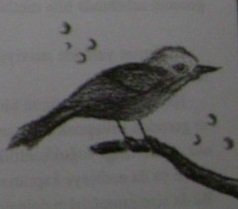

Bir gün bir mavi kuş aniden camınızdan içeriye giriyor ve dışarıya çıkamıyor.
Bu yolunu şaşırmış kuşta sizi çeken bir şey var ve onu beslemeye karar veriyorsunuz. Ama ertesi gün kuşun rengi sizi şaşkınlığa düşürerek maviden sarıya dönüşüyor! Bu özel kuş ertesi gün gene renk değiştiriyor. Üçüncü günün sabahında parlak bir kırmızı ve dördüncü gün tamamen siyah oluyor. Beşinci gün uyandığınızda kuşun rengi nedir?
1. Renk değiştirmiyor, siyah kalıyor.
2. İlk rengi olan maviye dönüyor.
3. Beyaz oluyor.
4. Altın rengi oluyor.
